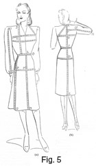
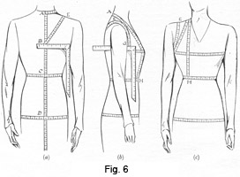

Early 1940's—Ladies' Garment Cutting and Making
by F. R. Morris
Chapter II—The Art of Measuring and Scales of Proportionate Measurements
As scientific garment cutting is based upon measurements of the human form, it is essential that accurate measures are always taken as a delineator of the general build of the figure to be fitted; they are the first need towards drafting a correct pattern. To endeavour always to obtain accurate measurements cannot be sufficiently impressed on the student or cutter; the finest cutting system in existence would be an abject failure if the measurements used in conjunction with it were inaccurate. Constant practice will give proficiency in this direction, and it is stressed that an identical degree of closeness or looseness in applying the tape-measure should be observed as much as possible on all occasions. We cannot expect a cutting system to give uniform results if a different degree of tension in measuring is adopted on some occasions and not on others, for obviously, as the allowances for ease and seams in the system are fixed, varying degrees of fitting quality will result if this factors not observed.
It is always advisable to take the measurements in a definite sequence. Some cutters arrange the measurements in one order, others differently, and if a salesman or saleswoman is taking these figures instruct them in the desired arrangement and method of measuring.
Accuracy in the act of measuring the client is of first importance, and there must also be cultivated the art of observing and tabulating in the mind the little peculiarities of the figure as the tape is passed over. A skilled cutter mentally allocates dimensions of height and width and, one might almost say, drafts the pattern in his mind's eye as he measures.
Cultivating the faculty of recognizing any little deformities is of great assistance later when at the cutting board. Having had a great experience of cutting garments to measures and figure descriptions supplied by other people, and knowing the weird and wonderful shapes they sometimes visualize in their minds, the author advocates that the client should be measured personally.
Always keep in mind the dimensions of a proportionate figure, and when the tape registers an increase or decrease of quantity note the position of the variation from normal. Most tailors have a code of their own for tabulating peculiarities of form growth by marginal notes in the order-book when they encounter a difficult figure whose characteristics of build are abnormal.
The advantages of such a code are obvious, for, in addition to acting as a refresher to a flagging memory, if the cutter is not able to deal with the job for a day or two, when the first clear-cut impressions of the figure have become indefinite, they are of great value on future occasions if the client is unable to call to be re-measured.
Abbreviations
The following are the abbreviations mostly used, though if more are needed it is a simple matter for anyone to invent suitable codes.
- S.R.B.—Slightly round back.
- R.B.—Round back.
- H.B.—Hollow back waist.
- P.S.—Prominent seat or hips.
- Sl. Sh.—Sloping shoulders.
- Sq. Sh.—Square shoulders.
- S.N.—Short neck.
- L.N.—Long neck.
- D.R.S.—Drop right shoulder.
- D.L.S.—Drop left shoulder.
When applying the tape to the figure, measures must be taken on the close side, for suitable allowances for ease are made in the working of the system. All measures should be taken on the left side of the figure. The reason for this is that, usually, the right shoulder is the lower of the two, and if the garment is cut to fit the left shoulder it is quite a simple operation to take-in the right shoulder and deepen the scye; whereas, though the left shoulder could be let out, we cannot decrease the depth of the scye.
The Measures
It should be specially noted that, in taking the measures, a waist belt or cord should be placed round the waist, in order to determine the natural waist position for the purpose of establishing a balance.
In Fig. 5 (a) and (b), the measurements should be made as follows—
(1) From A at the nape of the neck to the natural waist line, defined by the waist belt at C.
(2) From A to D, the desired length of the garment for short coats.
(3) The full length of the dress or coat taken from the nape of the neck at A to E.
(4) From C to E, the skirt length at the back.
(5) The width of the back measure taken from F to G. This quantity may be regulated by a division of the scale when drafting, but it is advisable to take this measure on the figure as a guide to any pronounced development of the blade section.
(6) The sleeve length, continuing from F and G to H at the elbow and on to the wrist at J. Two alternative measures are advocated by many craftsmen. They are the measure from the seam of the sleeve head to the wrist, as shown from points 1 to 2 in Fig. 5 (a), or a forearm measure from the front pitch to the wrist. Either of these two alternatives is but an approximation of the correct measure, as in each instance a variation of crown height or a higher run of seam on the shoulder than that of the garment measured would affect the finished length.
(7) The chest girth, taken over the dress, blouse or jumper with the tape well up on the blades at B (Fig. 5 (b)) on the back and passing round the figure to above the prominence of the bust in front as in Fig. 5 (a). With the tape still held in position at the back, lower in front to cover the bust prominence. This measure must be taken closely and accurately with observation as to the degree of development of the bust.
Figure 5—Taking the Measurements
(8) The waist measure, taken very tightly as for a skirt measure. Additions are made in the working of the system for ease when using this quantity for the drafting of coats or dresses.
(9) The hip measure, taken over the most prominent part of the hips, approximately 8 inches below the natural waist.
(10) The skirt length at the front taken, as decreed by the fashion of the moment, from L to M and N. The side skirt measure is taken from O to Q.
(11) The front waist length from the nape of the neck at A, over the shoulder to the bust prominence at T, continuing to the front waist at L. This measure is very useful as a delineator of balance when the figure is erect or stooping in attitude.
Direct Check Measures
The foregoing are the standard measures that are always taken; other shoulder or balance measures may be obtained as a check on the deductions calculated from the working scale when drafting the pattern.
These additional measures are termed "direct measures," and are intended to define by direct measurement on the figure its relative shape and attitude. Undoubtedly, if these quantities are carefully taken a great deal of benefit is derived, but, on the other hand, it is not always possible to ensure accuracy unless they are taken over a very well-fitting garment. To take direct measures on the figure, place a square under the arm as shown in Fig. 6 (a). Mark the level of the scye at the sideseam, and then mark a point at B on the centre back seam horizontal with the scye level. At the front of the armhole at G (Fig. 6 (b) ), make a balance mark, taking care that the square remains horizontal. The following measures are then taken—
Figure 6—Taking Direct Measurements
(1) The depth of the scye, or the back depth to the base of the armhole, from the nape of the neck at A to B (Fig. 6 (a)).
(2) The natural waist length from A to C (Fig. 6 (a)), continuing to D, the most prominent part of the hips. It is no use when drafting to measure the hip prominence at 8½ inches below the natural waist line, apply to the draft at 7 inches below the waist and then wonder why the garment is too large on the hips.
(3) The over-shoulder measure from B (Fig. 6 (a)) at the centre back to E on the shoulder, thence to G (Fig. 6 (b)) at the front of the scye.
(4) The front shoulder measure, taken from the nape of the neck at A (Fig. 6 (b) ), over the front shoulder to G at the front of the scye.
(5) The across-chest measure, taken above the bust prominence from the seam of the sleeve at one side to the other.
(6) The front waist measure from the nape A (Fig. 6 (b)) over the shoulder to H at the front waist, the prominence of bust length being also noted in addition.
The above measures are those usually taken and found to be most practicable for general use. When taking direct measures it is well to remember that such measures are only approximations even if the utmost accuracy is observed in their recording, and as such their use must be tempered with common sense. The author has had direct measures given to him to work by that would produce for a 36-inch bust figure a garment suitable in every respect of scye and shoulder size to a 48-inch or 50-inch bust. How some of these measures are obtained is a mystery, but a shrewd guesser would say that the garment measured over had an armhole down in the waist somewhere. Maybe the depth of the scye had been measured from the top of the collar!
Scale of Proportionate Measurements and Working Tables
Tables of proportions are always of use as a means of comparison with measures registered on the figure and as a guide to where the variation of development in abnormal figures is apparent. For instance, if we measured a woman and the back width quantity was 6¼ inches for a bust girth of 38 inches, obviously the increase in size must be located disproportionately as the back width is only equal to a 32-inch bust girth. In this instance, the increase would be all at the front in the across-chest width.
Some useful tables, together with one showing aliquot parts of the scale or breast measure, are given below.
Bust Inches |
Waist Inches |
Hips Inches |
Waist Length Inches |
Across Back Inches |
Elbow |
Sleeve Length Inches |
| 24 | 24 | 24 | 10 | 4½ | Half of Forearm Length | 17 |
| 26 | 24 | 26 | 11 | 5 | 20 | |
| 28 | 24 | 29 | 12 | 5½ | 23 | |
| 30 | 24 | 32 | 13 | 6 | 25½ | |
| 32 | 24½ | 36 | 14 | 6¼ | 27½ | |
| 34 | 25 | 38 | 15 | 6½ | 28½ | |
| 36 | 27 | 40 | 15½ | 6¾ | 29 | |
| 38 | 29 | 42 | 15½ | 7 | 29½ | |
| 40 | 31 | 44 | 16 | 7¼ | 30 | |
| 42 | 33 | 45 | 16 | 7½ | 30½ | |
| 44 | 34 | 47 | 16 | 7¾ | 30 | |
| 46 | 35 | 49 | 16 | 8 | 30 | |
| 48 | 36 | 51 | 15½ | 8¼ | 29½ | |
| 50 | 37 | 52 | 15½ | 8½ | 29½ | |
| 52 | 38 | 54 | 15 | 8¾ | 29 | |
| 54 | 39 | 56 | 15 | 9 | 29 |
| The following table of aliquot parts will give fractions of the scale or breast measure from one-ninth to two-thirds— | ||||||||||
| Scale or Breast Measure |
Inches | 1/9 | 1/8 | 1/7 | 1/6 | 1/5 | ¼ | 1/3 | ½ | 2/3 |
| 11 | 1¼ | 1 3/8 | 1 5/8 | 1 7/8 | 2¼ | 2¾ | 3¾ | 5½ | 7 3/8 | |
| 12 | 1 3/8 | 1½ | 1¾ | 2 | 2 3/8 | 3 | 4 | 6 | 8 | |
| 13 | 1 3/8 | 1 5/8 | 1 7/8 | 2¼ | 2 5/8 | 3¼ | 4 3/8 | 6½ | 8¾ | |
| 14 | 1½ | 1¾ | 2 | 2 3/8 | 2 7/8 | 3½ | 4¾ | 7 | 9 3/8 | |
| 15 | 1 5/8 | 1 7/8 | 2¼ | 2½ | 3 | 3¾ | 5 | 7½ | 10 | |
| 16 | 1¾ | 2 | 2 3/8 | 2¾ | 3¼ | 4 | 5 3/8 | 8 | 10¾ | |
| 17 | 1 7/8 | 2 1/8 | 2½ | 2 7/8 | 3 3/8 | 4¼ | 5¾ | 8½ | 11 3/8 | |
| 18 | 2 | 2¼ | 2 5/8 | 3 | 3 5/8 | 4½ | 6 | 9 | 12 | |
| 19 | 2 1/8 | 2 3/8 | 2¾ | 3¼ | 3 7/8 | 4¾ | 6 3/8 | 9½ | 12¾ | |
| 20 | 2¼ | 2½ | 2 7/8 | 3 3/8 | 4 | 5 | 6¾ | 10 | 13 3/8 | |
| 21 | 2 3/8 | 2 5/8 | 3 | 3 ½ | 4 1/8 | 5¼ | 7 | 10½ | 14 | |
| 22 | 2½ | 2¾ | 3 1/8 | 3¾ | 4 3/8 | 5½ | 7 3/8 | 11 | 14¾ | |
| 23 | 2 5/8 | 2 7/8 | 3 3/8 | 3 7/8 | 4 5/8 | 5¾ | 7¾ | 11½ | 15 5/8 | |
| 24 | 2¾ | 3 | 3½ | 4 | 4 7/8 | 6 | 8 | 12 | 16 | |
Scales for Shorts
Inches |
|||||||||
| Bust | 21 | 22 | 23 | 24 | 25 | 26 | 27 | 28 | 29 |
| Waist | 18 | 19 | 20 | 21 | 22 | 23 | 24 | 25 | 26 |
| Hip | 23 | 24 | 25 | 27 | 28 | 29 | 30 | 31 | 33 |
| Leg | 3½ | 3½ | 3¾ | 3¾ | 4 | 4 | 4¼ | 4½ | 5 |
| Rise | 7¾ | 8 | 8¼ | 8½ | 8¾ | 9 | 9¼ | 9¾ | 10 |
| Knee | 16½ | 17 | 18 | 18½ | 19 | 19½ | 20 | 21 | 22 |
Inches
|
|||||||||
| Bust | 32 | 33 | 34 | 35 | 346 | 37 | 38 | 39 | 40 |
| Waist | 24 | 25 | 26 | 27 | 28 | 29 | 30 | 31 | 32 |
| Hip | 35 | 36 | 37 | 38 | 39 | 40 | 41 | 42 | 43 |
| Leg | 4 | 4 | 4½ | 4½ | 5 | 5 | 5½ | 5½ | 6 |
| Rise | 11¼ | 11½ | 11¾ | 12 | 12¼ | 12½ | 12¾ | 13 | 13 |
| Knee | 22½ | 23 | 23¼ | 23¾ | 24 | 24¼ | 24½ | 24¾ | 25 |
Inches |
|||||||
| Waist | 22 | 23 | 24 | 25 | 26 | 27 | 28 |
| Hip | 29 | 30 | 31 | 32 | 34 | 35 | 37 |
| Leg | 3½ | 3½ | 3½ | 4 | 4½ | 4½ | 5 |
| Rise | 9 | 9¼ | 9½ | 9¾ | 10¼ | 10¾ | 11 |
| Knee | 19½ | 20 | 20½ | 21½ | 22 | 22½ | 22½ |
Inches |
|||||
| Waist | 24 | 26 | 28 | 30 | 32 |
| Hip | 35 | 37 | 39 | 41 | 43 |
| Leg (Plain Bottom) | 29 | 29½ | 30 | 30½ | 30½ |
| Rise | 11½ | 11¾ | 12 | 12¼ | 12½ |
| Knee | 24½ | 24½ | 25 | 25½ | 25½ |
| Bottom | 22 | 23 | 23½ | 24 | 24 |
Inches |
||||||||||
| Length | 16 | 18 | 20 | 22 | 24 | 27 | 29 | 32 | 36 | 39 |
| Bust | 22 | 23 | 24 | 25 | 26 | 27 | 28 | 29½ | 31 | 32½ |
| Hips | 22 | 23 | 24 | 26 | 28 | 29 | 30 | 31½ | 33 | 35½ |
| Across Back | 4¼ | 4½ | 4¾ | 5 | 5¼ | 5 3/8 | 5½ | 5¾ | 6 | 6¼ |
| Sleeve | 8 | 8½ | 9½ | 10½ | 11½ | 12 | 12½ | 13½ | 14½ | 15½ |
| Bust | 33 | 34½ | 36 | 37½ | 39 |
| Waist | 26 | 27½ | 29 | 30½ | 32 |
| Hips | 36 | 37½ | 39 | 40½ | 42 |
| Length to Waist | 15¼ | 15½ | 15¾ | 16 | 16¼ |
| Sleeve Underarm | 17 | 17½ | 18 | 18 | 18 |
| Skirt Length | 25 | 26 | 27 | 27½ | 28 |
| Size | 12 | 14 | 16 | 18 | 20 |
Size |
Neck to Waist |
Coat Length |
Bust |
Waist |
Hips |
Across Back |
Inside Sleeve |
| 2 | 10½ | 17 | 31 | 22 | 33½ | 11½ | 12½ |
| 3 | 11 | 18 | 32 | 22½ | 34½ | 11¾ | 13 |
| 4 | 11½ | 18½ | 33 | 23 | 35½ | 12 | 14 |
| 5 | 12¼ | 19½ | 34 | 24½ | 36 | 12¼ | 15 |
| 6 | 13 | 20½ | 35 | 25 | 36½ | 12½ | 16 |
| 7 | 14 | 21 | 36 | 25½ | 37½ | 13 | 16½ |
| 8 | 14½ | 21½ | 37 | 26 | 38½ | 13½ | 17 |
| 9 | 15 | 22 | 38 | 27 | 40½ | 13¾ | 17½ |